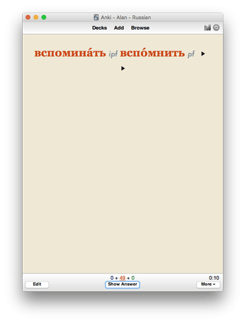
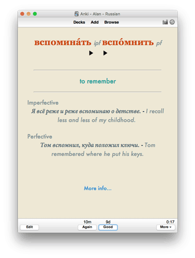

Anki
Anki is a spaced repetition learning application available on Mac, PC, Linux, iOS and Android. I've used Anki for more than a decade. Within the language learning community, Anki is the most widely-used tool for memorizing vocabulary, practicing grammar, etc.
Here are two example screens - the front and back of one of my cards:

Anki resources
- /r/anki - the Anki subreddit. Lots of Anki experts hang out here. It's a good place to ask question about effective Anki use.
- Anki home page
- Anki 2.0 manual This is the definitive reference on using Anki.
- Anki Tips: What I Learned Making 10,000 Flashcards There are some good tips here, though I would struggle with low-fidelity drawings.
- A complete beginner’s guide to Anki This is a basic introduction to Anki.
- Intermediate Anki 1: Understanding Statistics and Card Types. The first of a series of articles on more advanced use of Anki.
- Intermediate Anki 2: Deck Options Even more settings and options in Anki.
- Intermediate Anki 3: Introduction to Card Types A discussion of card types in Anki.